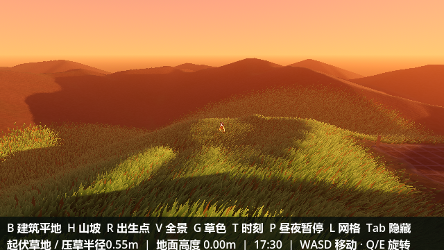
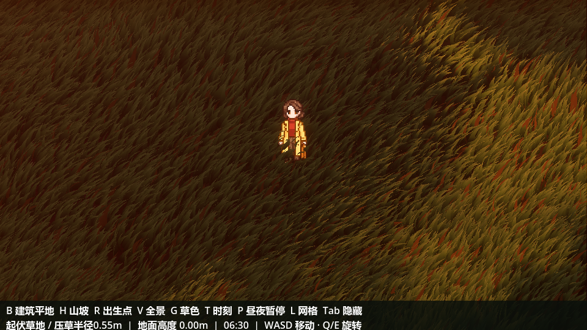
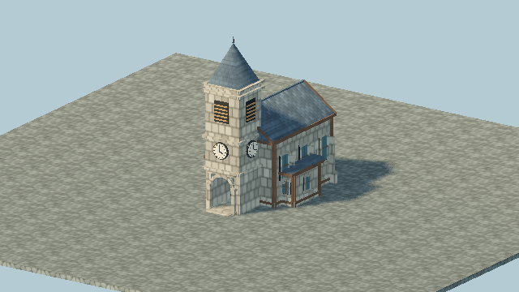

CREATIVE ARCHIVE / WORLD IN PROGRESS
制作记录
从一片随风起伏的草地，
到一个值得探索的世界。

FIELD STUDY / 001
风经过的地方
让想象成为世界。草地、天空和光影，是这个世界最初的几笔。
SCENE RECORD / THE CHANGING LIGHT
同一片草地，不同的时刻。
保留最初的场景记录。选择清晨、正午或黄昏，看看一天之中光线的变化。

06:30 / 清晨
SPACE / CHARACTER / INTERACTION
世界，从细节开始。
关于世界的构筑，
也关于人与世界的关系。

有故事的空间
建筑原型 / 场景构成 / 像素材质
像素，也有生命
八向角色 / 帧动画 / 交互表达
GAME / SPACE / INTERACTION
在设计与技术的交界处，
探索想法成为现实的可能。
从规则到画面，从概念到原型，尝试把每个细节连接成完整的体验。
看看如今的小镇